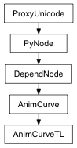

Adds a new key with the given value and tangent types at the specified time for curves of type kAnimCurveTA, kAnimCurveTL and kAnimCurveTU.
| Parameters: |
|
|---|---|
| Return type: | int |
Derived from api method maya.OpenMayaAnim.MFnAnimCurve.addKey
Adds a new key with the given value at the specified time.
| Parameters: |
|
|---|
Derived from api method maya.OpenMayaAnim.MFnAnimCurve.addKeyframe
Undo is not currently supported for this method
Determines the interpolated output value of Anim Curves of type kAnimCurveTA, kAnimCurveTL and kAnimCurveTU at the specified time.
| Parameters: |
|
|---|---|
| Return type: | float |
Derived from api method maya.OpenMayaAnim.MFnAnimCurve.evaluate
Determines the index of the key which is set at the time closest to the specified time.
| Parameters: |
|
|---|---|
| Return type: | int |
Derived from api method maya.OpenMayaAnim.MFnAnimCurve.findClosest
Returns the timed animCurve type appropriate for the specified plug.
| Parameters: |
|
|---|---|
| Return type: |
Derived from api method maya.OpenMayaAnim.MFnAnimCurve.timedAnimCurveTypeForPlug
Returns the unitless animCurve type appropriate for the specified plug.
| Parameters: |
|
|---|---|
| Return type: |
Derived from api method maya.OpenMayaAnim.MFnAnimCurve.unitlessAnimCurveTypeForPlug